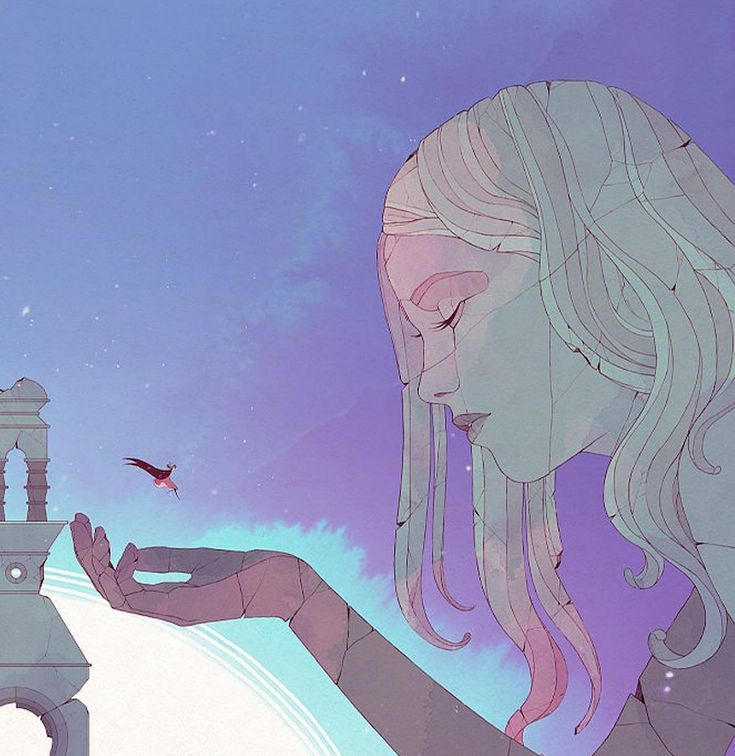

O jogo conta a história de Gris, uma jovem que passa por uma jornada emocional após sofrer uma perda traumática. A narrativa é simbólica e sem diálogos, focando na superação da dor, tristeza, aceitação e crescimento pessoal. Cada fase representa um estágio do luto (negação, raiva, barganha, depressão e aceitação).
Um de seus destaques vai para a arte belíssima em aquarela e animações fluidas, criando um visual quase poético. A trilha sonora é suave, emocional e acompanha perfeitamente cada momento do jogo.